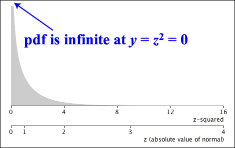

Shape of the distribution
The \(\ChiSqrDistn(1\;\text{df})\) distribution is very skew. Its pdf is infinite at zero — \(f(0) = \infty\) and its right tail is very long.

The mean and variance of the \(\ChiSqrDistn(1\;\text{df})\) distribution can be found directly from the following integrals.
\[ E[X] = \int_0^{\infty}x\;f(x) dx \spaced{and} E[X^2] = \int_0^{\infty}x^2\;f(x) dx \]However since the distribution is a special case of the Gamma distribution, we can use the formulae for the mean and variance of the Gamma distribution.
Mean and variance
If a random variable \(X\) has a \(\ChiSqrDistn(1\;\text{df})\) distribution, its mean and variance are
\[ E[X] \;=\; 1 \spaced{and} \Var(X) \;=\; 2 \](Proved in full version)